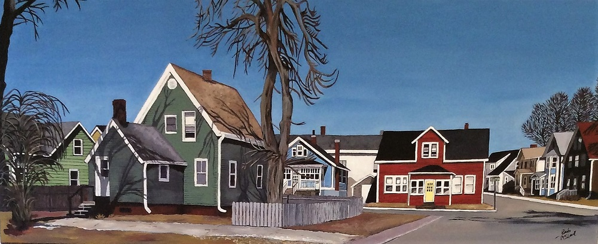
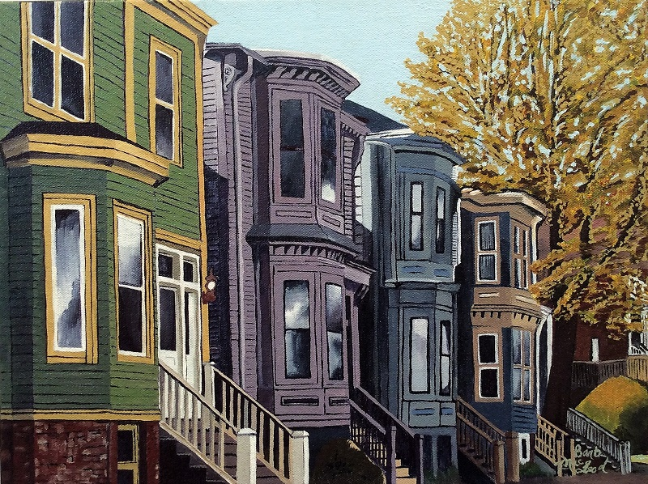
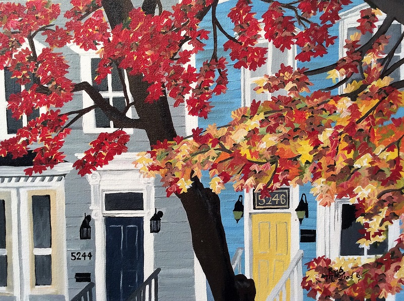

The first painting I completed was of Cogswell Street in Halifax, Nova Scotia. My daughter Jessica, who lives in Halifax, now calls that her own. Since then I have enjoyed doing many streetscapes. They always tend to be my most popular paintings.
Please scroll down to find your selected painting.
Title: Spring Morning

Arclyic on Stretched Canvas over 1 1/2" wood frame, 16"height x 40"width
Price: $700
Title: Gottengen Street

Arclyic on Stretched Canvas over 1 1/2" wood frame, 12"height x 16"width
Price: $300
Title: Victorian Fall

Arclyic on Stretched Canvas over 3/4" wood frame, 12"height x 16"width